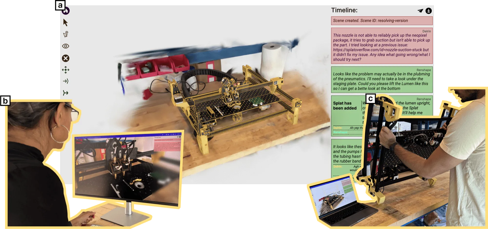
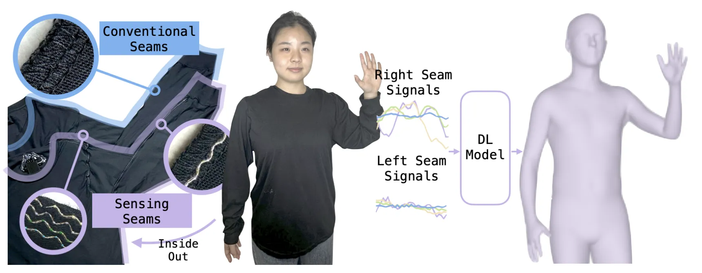
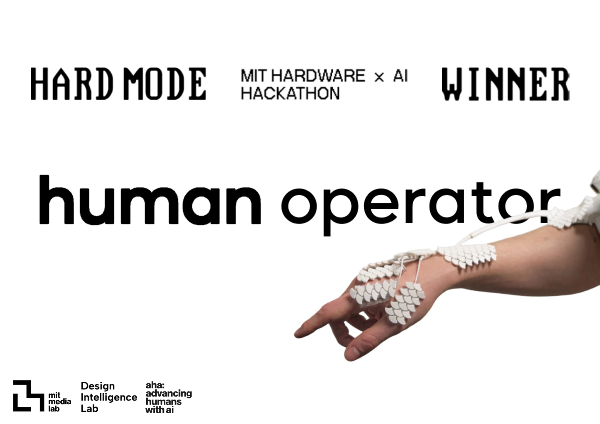
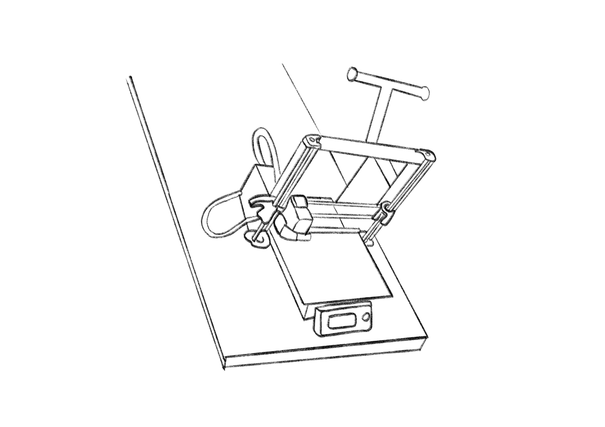
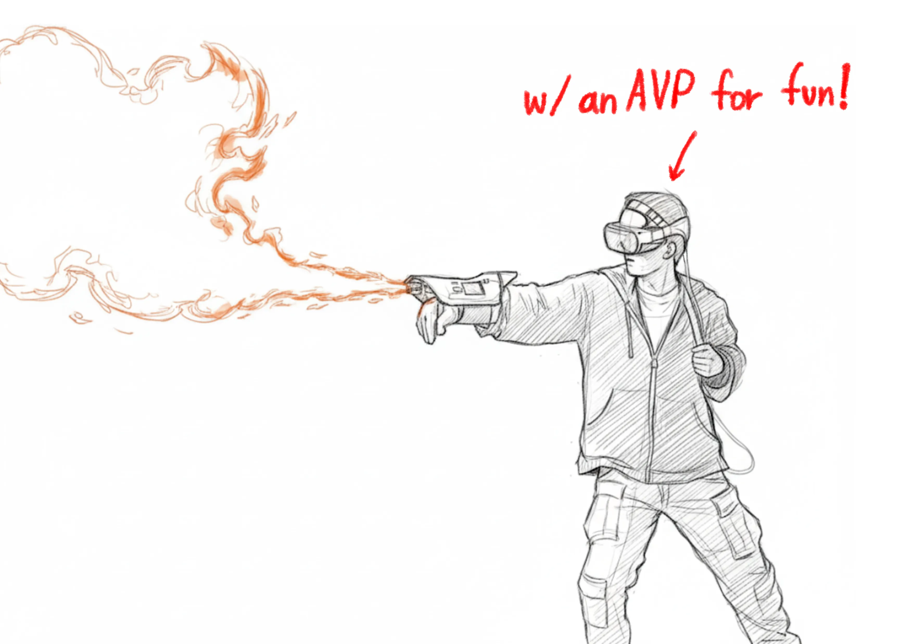
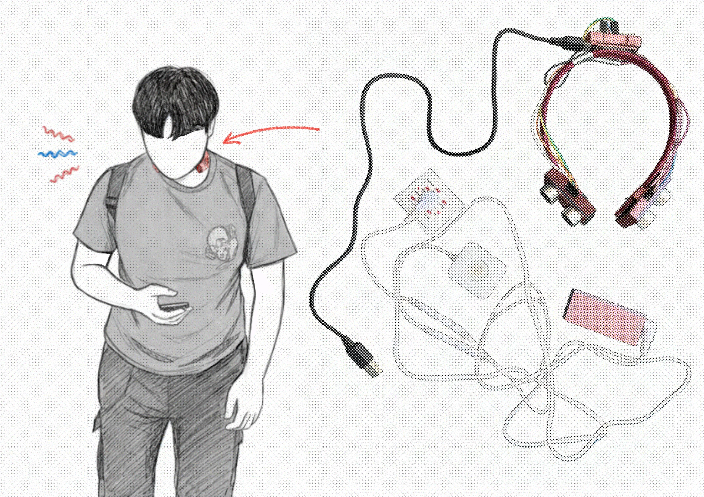

Hi, I'm Peter He
Cornell 🌽 ECE + Robotics '27
I work within the areas of Human Computer Interaction (HCI), Wearables, and XR.
At Cornell University I conduct research under Prof. Cheng Zhang in the Sci-Fi Lab as well as with Prof. Cara Nunez in the HAPPI Lab and previously with Prof. Thijs Roumen at Cornell Tech.
I also founded and lead Cornell XR, the fastest club to ever become an official Cornell Engineering project team building projects in Haptics and XR.
Previously, I was an engineering intern @ Mira, building both software and hardware for smartglasses with a display + always-on AI assistance, I also made firebending real.
Outside of academics, I really enjoy creative work and prototyping interaction concepts.
I am applying for PhDs with a Fall 2027 start date. If you have a position available and find my work interesting, I would love to chat about potential opportunities!
I am currently a Summer 2026 research intern under Prof. Tingyu Cheng at the University of Notre Dame, working on wearables, stretchy textile electronics, and their fabrication.
Feel free to reach out to me at
ph475@cornell.edu
or connect with me on
LinkedIn.
publications
*excluding pending submissions ;-;

SplatOverflow: Asynchronous Hardware Troubleshooting
Amritansh Kwatra, Tobias Wienberg, Ilan Mandel, Ritik Batra, Peter He, Francois Guimbretiere, Thijs Roumen
Honorable Mention at ACM CHI 2025

SeamPose: Repurposing Seams as Capacitive Sensors in a Shirt for Upper-Body Pose Tracking
Tianhong Catherine Yu, *Manru Mary Zhang, *Peter He, Chi-Jung Lee, Cassidy Cheesman, Saif Mahmud, Ruidong Zhang, Francois Guimbretiere, Cheng Zhang
*Co-Second Author on the Paper for contributions (Freshman Year)
featured projects
A few of my publicly documented projects, for more, look at my projects page!.

Human Operator
Gaussian Splat Localization
Firebender
Sixth-Sense(Galvanic Vestibular Stimulation eg. GVS).